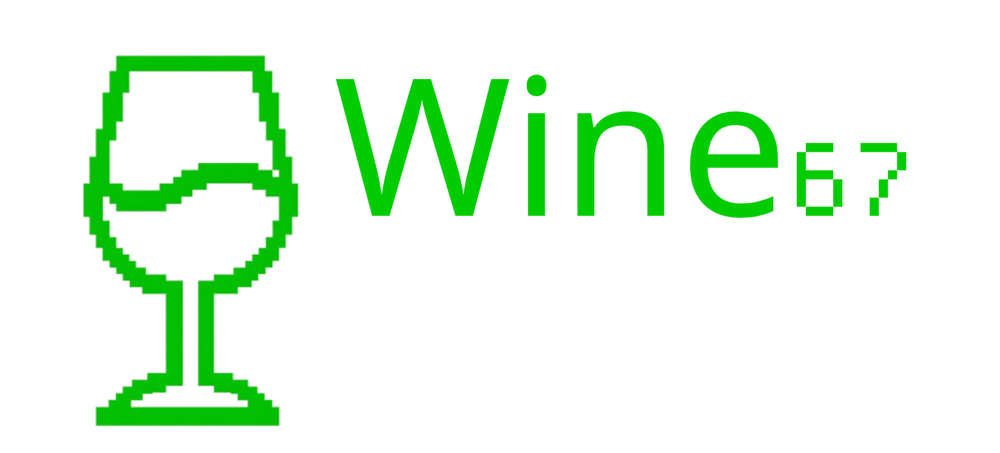

O Wine67 é um script de shell portável para rodar jogos de Windows no Linux. Ele não precisa de instalação e pode ser executado diretamente de um pendrive ou de qualquer outro dispositivo de armazenamento portável. Ele foi projetado para ser fácil de usar, mesmo para quem não tem familiaridade com o Linux ou com interfaces de linha de comando.

Ou pode escolher o .sh já com CS 1.6 incluído (Recomendado para quem quer começar a jogar imediatamente). Download abaixo:
O Wine67 é um projeto de código aberto, e seu código-fonte está disponível no GitHub. Você pode contribuir para o projeto relatando problemas, sugerindo recursos ou enviando pull requests. Suas contribuições são muito bem-vindas.
Para mais informações sobre o Wine67, consulte o arquivo readme no repositório do GitHub. Você também pode encontrar documentação e tutoriais sobre como usar o Wine67 de forma eficaz.
Aqui está o link para o repositório no GitHub: Wine67 no GitHub
O projeto está em desenvolvimento, então espere alguns bugs e recursos ausentes. Por favor, relate quaisquer problemas que encontrar no repositório do GitHub.